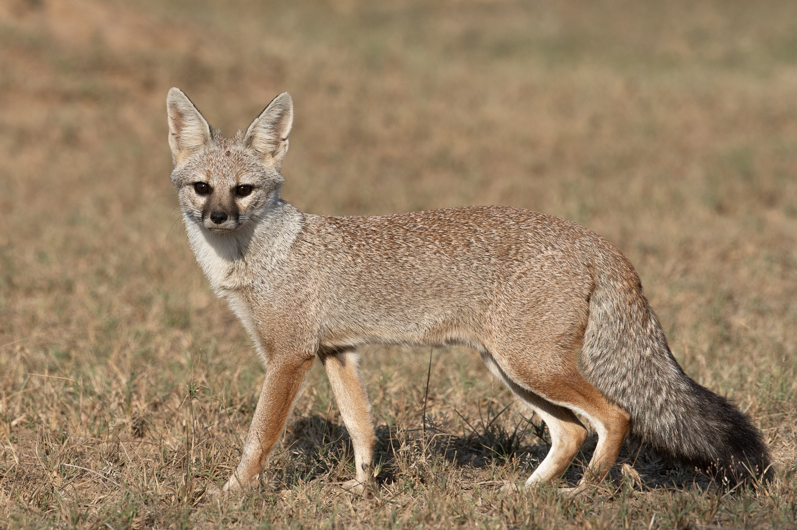
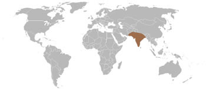
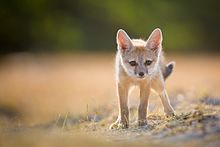

Description of the Bengal Fox
Appearance
The Bengal fox is a relatively small fox with an elongated muzzle, long, pointed ears, and a long, bushy tail. The pelage ranges in color from buff to silver-gray with an overall grizzled effect; the dorsal pelage is mostly grayish and paler ventrally. The legs tend to be brownish or rufous, and the underparts light, a pale sand or ginger shade.
The Bengal Fox is more daintily built than the red fox (V. vulpes) and can readily be recognized by its bushy, black-tipped tail, which is around 50–60% of the length of the head and body.
Habitat
The Bengal Fox is endemic to the Indian subcontinent, ranging from the Himalayan foothills and Terai of Nepal through the South portion of the Indian Peninsula (but the western and east Ghats are not included) and from southern and eastern Pakistan to eastern India and southeastern Bangladesh. In Nepal and northeast India, it occurs up to 1,500 meters long. It was not reported from Afghanistan or Iran or from the Western Ghats, India.
 Its range is bounded by the Himalayas and the Indus River valley. It favors semiarid, flat to undulating land, bush and short grassland habitats. It avoids dense forests, steep terrain, tall grasslands and true deserts. It is relatively widespread in low rainfall areas where the vegetation is usually scrub, thorn or dry deciduous forests, or short grasslands. In the Indian peninsula, the species is confined to plains and open scrub forests. It was considered to be a habitat generalist, but it shows a strong preference for semiarid, short grassland habitats at multiple scales.
Its range is bounded by the Himalayas and the Indus River valley. It favors semiarid, flat to undulating land, bush and short grassland habitats. It avoids dense forests, steep terrain, tall grasslands and true deserts. It is relatively widespread in low rainfall areas where the vegetation is usually scrub, thorn or dry deciduous forests, or short grasslands. In the Indian peninsula, the species is confined to plains and open scrub forests. It was considered to be a habitat generalist, but it shows a strong preference for semiarid, short grassland habitats at multiple scales.
Behaviour
 Bengal foxes are predominantly crepuscular and nocturnal; while individuals may sometimes become active during cool periods of daytime, they typically spend warmer daylight hours under vegetation or in subterranean dens. They use three distinct types of den: basic, compact dens with two openings used for short rest periods, complex dens with multiple openings, and dens under rocks or rock crevices. The basic social unit of the Bengal Fox is the breeding pair, formed by a pair of bonds that can last for many years. Larger aggregations may occur while grown pups linger longer than average in the natal community.
Bengal foxes are predominantly crepuscular and nocturnal; while individuals may sometimes become active during cool periods of daytime, they typically spend warmer daylight hours under vegetation or in subterranean dens. They use three distinct types of den: basic, compact dens with two openings used for short rest periods, complex dens with multiple openings, and dens under rocks or rock crevices. The basic social unit of the Bengal Fox is the breeding pair, formed by a pair of bonds that can last for many years. Larger aggregations may occur while grown pups linger longer than average in the natal community.
Bengal foxes make a wide range of vocalizations. A common vocalization is a "chattering cry" that seems to have a significant role in establishing territoriality and may also be used as a warning call. They also growl, whimper, whine and make a sound which could be called a growl-bark. In reaction to humans, yapping or baying has also been observed.
 Bengal foxes are thought form long-term monogamous pairs, but this supposition is based on scarce evidence and extra-pair copulations are known to occur. During the breeding season, males vocalize intensely during the night and at dusk and dawn. Throughout most of its range, the mating season occurs in December to January and after a gestation period of around 50–53 days, two to four pups are born in a den. Both parents participate in pup-rearing and protection.